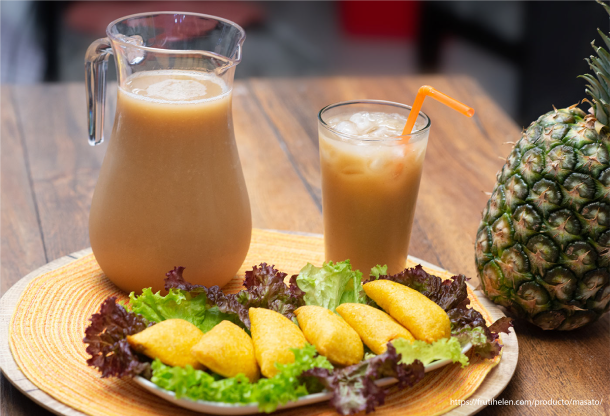

UN SORBO DE TRADICIÓN LLANERATe invitamos...A deleitar nuestro producto conmemorativo por los treinta y cinco años que cumple el festival desde su creación en la feria gastronómica de emprendedores.
Allí también encontrarás gran variedad de platos típicos a base de arroz que son realizados alrededor de nuestra región.
